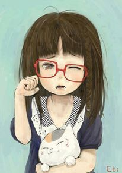
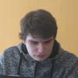

Notre Groupe
Notre groupe est composé de Hania, Bari, Adrian, et Mehdi.
1.HANNIA
- profile de hania: Je suis une personne ambutieuse, aimant les chalenges, issue du domaine network et télécoms. je m'oriente vers le devellopement, car j'ai un projet qui me tient à coeur: travailler avec ma fille diplomée en diététique et nutrition. je souhaite acquérir les compétences pour faire un site ecommerce, où elle peut faire des consultations diététique en ligne ce site sera évolué pour la vente des produits diététique conçus et fabriqués maison. ce site sera tenu et géré par moi.
2.BARI
- profile de Bari :
- To Understand the importance of the web as a medium of communication.
- To Understand the principles of creating an effective web page, including an in-depth consideration of information architecture.
- To Become familiar with graphic design principles that relate to web design and learn how to implement these theories into practice.
- To Develop skills in analyzing the usability of a web site.
- To Learn the language of the web: HTML and CSS.
- To Develop skills in digital imaging (Adobe Photoshop.)
- To Be able to embed social media content into web pages.
- To Implement and understand how to interpret basic web analytics.
Hi My name is Tufail Bari Mian,i am a student at becode anderlecht,My aims and obectives at becode are as under:
3.ADRIAN
- profile de ADRIAN :
quand je dis codage je comprends par cela beaucoup de languages informatiques differents. Par exemple, C++, XML, LUA, PHP, HTML, CSS, C#, Javascript. J'aime beaucoup faire des travaux physiques. Ma curiosité me permet d'avancer dans ce que j'entreprends. Pourquoi BeCode et pas une école normale ? BeCode signifie, pour moi, un nouveau style d'apprentissage qui me permet d'évoluer plus facilement. je m'attends à beaucoup de travail mais je suis prêt pour le chalenge.
4.Mehdi

- profile de Mehdi :
Je m'appelle Mehdi Roostazadeh et j'ai 32 Ans, je suis Iranien. je suis vraiment content de me trouver parmi vous. Je faissais pas mal d'études dans ma vie. Ma Première Experience aprés mon lycée, était dans informatique pendant 1 ans et demi. Depuis mon enfance, je rêve de devenir médcin donc j'ai decidé de partir de mon pays et venir en belgique. J'ai 3 ans d de médecine mais en troisiéme année, j'ai bien compris que je ne peux pas supporter tous les jours la souffrance humaine. C'est alors que j'ai changé d'orientation et j'ai commencé une formation d'éducateur specialisé. Mais au millieu de la premiere année j'ai compris que je ne serai pas capable d'etre un bon éducateur face à l'handicap. Finalment j'ai chosi des études infographie. Actuellemnent, je suis en troisiéme année en Infographie et il me reste juste 2cours comme 3D et After Effect.